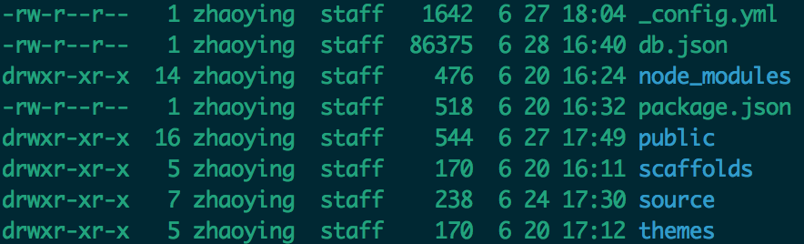
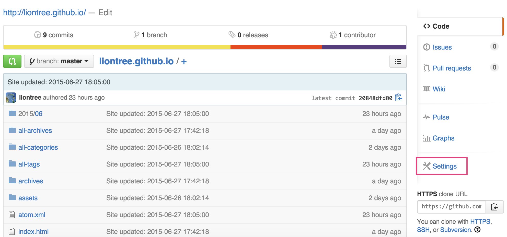
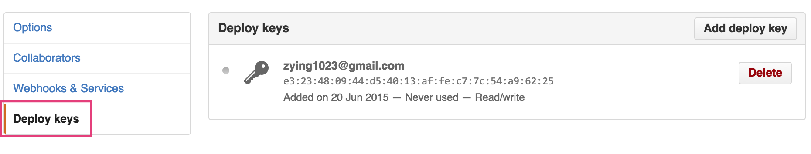

基于Hexo和Github搭建博客
Hexo是一个博客框架，功能上有点类似于Jekyll，都可以实现“一键部署”你自己的博客的效果，本文就来简单介绍下如何基于Hexo & Github Page搭建自己的blog。
Preparation
Hexo Install
1 | $ npm install -g hexo-cli |
以上步骤完成后，就可以在yourBlog目录下看到新生成的文件了

Hexo Config
Github repository
搭建blog首先要有一个托管的地方，如果你之前用Github托管过博客，那么这不是什么问题，新建一个仓库，然后设置Deploy keys。
生成Deploy keys:1
ssh-keygen -t rsa -C "youremail@example.com"


_config.yml
1 | # URL url: http://yoursite.com root: / permalink: :year/:month/:day/:title/index.html permalink_defaults: # Directory source_dir: source public_dir: public tag_dir: all-tags archive_dir: archives category_dir: categories code_dir: downloads/code i18n_dir: :lang skip_render: # Writing new_post_name: :title.md # File name of new posts default_layout: post titlecase: false # Transform title into titlecase external_link: true # Open external links in new tab filename_case: 0 render_drafts: false post_asset_folder: true relative_link: true future: true highlight: enable: true line_number: true auto_detect: true tab_replace: # Category & Tag default_category: uncategorized category_map: tag_map: # Date / Time format date_format: YYYY-MM-DD time_format: HH:mm:ss # Pagination per_page: 10 pagination_dir: page # Extensions theme: tranquilpeak feed: type: atom path: atom.xml limit: 20 # Deployment deploy: type: git repo: https://github.com/XXX.git branch: master |
Hexo themes
这里有很多不错的主题，下载完成后在Hexo的_config.yml中设置theme，有些主题自己本身也有相应的设置，可参考各自的README。
OK，到此一个基于Hexo&Github搭建的blog已经完成了，接下来就是如何开始写了，不详细说了哈，hexo的基本命令都不复杂，可参考官方文档。
周末愉快：-）